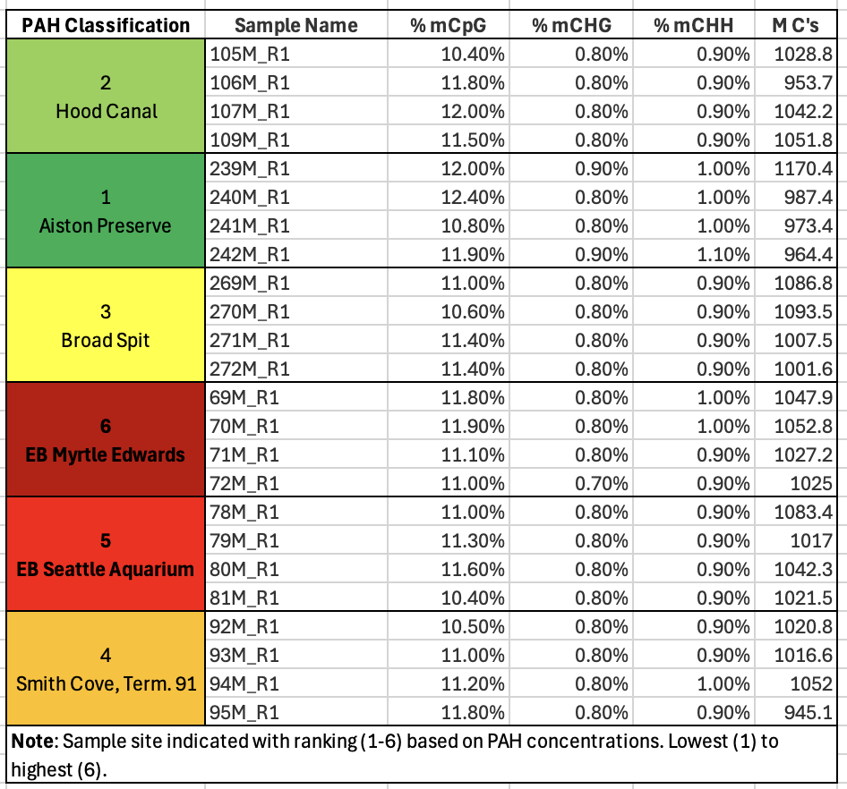

Mussel Methylation
Process Notes
Process Overview
DNA Methylation analysis of 24 WGBS samples. The project log is coming together slowly. Right now, a running log of work completed by date is the only thing populated. The goal here is to create a singular place where I can access, workflow, decisions, knowledge gained, and questions I have throughout the process.
Quick Links
Project repo
Literature
Methods
Protocols/ Tools Used
- Sampling
- Bench
- Analysis
- Tools/ Software
Process Roadmap
[x] Dissect [x] Sequence [-] Standardize and analyze [] Correlate to contaminants [] Write
Working Log
March 19-29, 2026
2026-03-19
- When I shifted over to DNA methylation, I found myself with more analysis/ workflow questions than mechanistic questions.
- I pivoted to creating a more comprehensive checklist and process to follow for myself since it is easy for me to rattle a few high-level steps, but unpacking them has been a process.
- I then created a decision outline with some guiding questions for the analysis.
- For both I chose to start at the point of sequences in hand - I will need to go back and make a section for sampling/ experimental design. Probably when I work on the methods for the manuscript.
- This exercise took an embarassingly long time, but really helped me get down to the ‘bones’ of the process and set myself up to comprehensively answer any questions with something more robust than “that’s how my lab does it”.
- For all of my explainers/ note docs I am certain there is plenty of room to make them better, and when the time is appropriate, I will, but for now I need to get back to basics and reinforce information or decisions I have been treating as ‘set-in-stone’ facts.
- I was feeling pretty ‘ready to apply’ this reinforced knowledge and quickly learned that sorting through old code and outputs after dinner is a recipe for instant despair.
- I went back to the DNA methylation analysis work to see where I left off and possibly move forward… I did this because evening writing is often akin to trying to sharpen a pencil with a blade of grass - not smart. So, I thought, maybe tangible do X get Y work would do it. Instead, I am now questioning every decision and trying to figure out how my maping efficiency has not gotten above 27%, and if that is even a problem… Key sign to pack it up for the day.
2026-03-20
- My first step was to re-acclimate myself with where the project was in the pipeline, where it needed to go, and what the next tangible steps are.
- First, I have not yet gotten myself sorted on Klone, so I am still working on Raven.
- Reviewing the sequences and alignments, I realized three major things.
- No documentation of matching checksums for my sequences or for the reference genome.
- No notes on potential parameter testing/ mapping efficiency percentages and what was adjusted to get there, or what needed to be done.
- I didn’t remove the sequencer artifacts from the work, so my QC reports are 99% unnecessary and not useful.
- Since I just made a list of steps and decisions, I went back and used them!
- First, I removed all of the old, second, I reviewed and updated the code files that I created from Steven’s originals and modified for running on my machine, not Raven. Most important, I added some echoes so I wasn’t flying blind in the process.
- Next up, I cleaned up the repo folders, added code to concatenate the individual checksums into a single text file so I didn’t have to open 48 files…
- Once my sequences were uploaded/ downloaded/ pulled into Raven, I pulled out one sample (reads 1 & 2) from the high PAH (69M) and low PAH (272M) to run through the complete process before analyzing the complete dataset.
- I moved all other sequences out of the raw data folder and committed.
2026-03-21
- The day started with running FastQC and MultiQC on the representative samples.
- I did not properly move the sequencer artifacts, so my QC rerun failed repeatedly until I realized it was because I needed to properly move those files and not adjust the code… that took a little too long.
- FastQC went well and reminded me that I need to ask again what some of the quality parameters mean in the broader analysis-impact pov.
- I spent the better part of the day checking why I was stuck in MultiQC purgatory… I am doing something wring because it should not take half a day to run MultiQC on 4 samples, but after some troubleshooting, I can’t figure out what it is. I will ask for help on this one before I screw up something in the shared drives on Raven.
- I moved over to trimming, bypassing MultiQC while keeping FastQC.
- Based on on the FastQC returns, the standard 20by at the beginning and end of the raw sequences makes sense. I see we use fastp, but TrimGalore is everywhere - I will try to sort out the differences or create a comparison at another less time-restricted moment.
- I completed trimming, reviewed those FastQC files (bypassing MultiQC until I can figure out where it is getting stuck), and moved on to grabbing the reference genome from NCBI and starting the alignment.
- Once I started the alignment script, I let that run while I worked on some of my UW-RUA deliverables for the week.
2026-03-22
- I checked in on the alignments that I started running last night.
- The reference was downloaded and checksums confirmed.
- The first sample alignment was completed around midday.
- The second sample was completed in the evening.
- I began looking at the next steps by reviewing the lab handbook, Steven’s Mytilus methylation repo, and Sam’s workflow for methylation analysis in oysters.
- I know that deduplication, methylation extraction and parameter testing are the next general steps, but my BASH code is pretty rudimentary and I spent an awfully long time just sorting what some of the commands do before building a base version.
- I built the ‘simple’ version by first writing out, in full words, what steps needed to be taken before turning to write out the script.
- In the process, I also noticed that I have some data files that saved to the code directory, so I need to remember to move them and ensure I am setting up my data and output paths properly in the scripts.
- I have not started the deduplication; that will be a task for next week while I am working on getting some of my other projects moving forward as well.
2026-03-25
- First ‘meeting’ was my working block with KPJ.
- I walked myself through the Bismark results so I could understand what I was seeing and what questions I actually needed to ask.
- I returned to my problem trying to access the qc programs. I haven’t been able to run a successful MultiQC yet. So, I created an environment in Raven where I can run FastQC and MultiQC without searching for the tools to only find the directories - this means I either don’t get a result, or the result returns an error after running for days.
- I updated my QC, trim, alignment and deduplication scripts to reflect this new environment.
- I ran the QC and trim files for all remaining sequences; I hadn’t done that yet, only for the two I am working with.
2026-03-26
- Somehow, I managed to lock up Raven on my end. I thought the additional script I started yesterday was MultiQC only, not the alignment script, and that caused everything to just hang in the air.
- I force- quit all terminals running
- I attempted to commit the files that I changed and managed to stare at a ‘commit’ screen that would not respond to any staging. I realized far too late that I checked one of the huge packages with about a gazillion parts while I was clicking around to see if I had just lost my mouse or if the interface was lagging…
- Now, I can’t get Raven to load without crazy lagging - I haven’t waited this long to accomplish anything since dial-up days- so I know I screwed something up on my side.
- I have shut it all down, killed all processes, and am going to restart it after my afternoon meeting.
- Returning to Raven. I had to reach out to Sam to kill anything I had going on because I very effectively put a pause on the work…
- I dug a bit more and realized it was a GitHub issue - one cannot simply commit using terminal and then attempt to push or pull with the interface without creating an issue..
- Once I solved my issue, I cleaned out the old mussel methylation repo taking up huge space, cleaned up my commit, and restarted Raven.
- Success was getting my MultiQC reports for the raw and trimmed files after looping through the output folders to ensure the downloads, checksums, and trimmed files existed with their respective FastQC files.
- I moved over to running the full alignments with Bismark after verifying that the reference was downloaded, checksum match confirmed, and Bismark bisulfite genome created. Now we wait…
2026-03-27
- First, I dropped into science hour to get Sam’s help in completing the rsync from Raven to Gannet for my methylation repo.
- I cleaned up old files, removed old repos, and made sure to commit anything necessary to github via terminal instead of the interface before completing the sync.
- We also chatted about the difference in parameters used to align the methylation sequences. I’m going with the standard choice in the lab re: stringency since the outputs don’t seem to show any significant differences.
- Next I worked on creating the deduplication script for the full sequences (not just the two I was working on, and not just the first 10k pairs) with a MultiQC output.
- I reviewed the methylation extraction code from both Sam and Steven and started to put that together.
2026-03-28
- After going over the parameters that Sam and I talked about yesterday, I annotated the scripts so I wouldn’t forget.
- I am still running the methylation analysis with the standard alignment parameters (L,0, -0.6) because this aligment stringency is the best balance between mapping efficiency and not inflating the CHH or CHG percentages; methylation percentage changes marginally (11.5% to 11.7%)
- Clarifying what I mean re: parameters below. When running Bismark and Bowtie2, the list of parameters below tell the programs what to do.
- First, The goal is to convert the reference genome to a bisulfite- ready version for alignment, and then Bowtie2 aligns my sample sequences with the bisulfite- converted reference genome.
- Alignment ‘matching’ stringency. This parameter check was done on the first 10k sequences of the aligned test sequences (69M- high PAH and 272M- low PAH) scores ranging from L,0,-4 to L,-1,-0.6). This is basically a ‘how many mismatches are too many’ check - the smaller the number (more negative), the more relaxed the matching and potentially the driver behind mapping efficiency differences. L- linear function, first number is the intercept, second number is the slope. These are impacted by read length… will add read length thresholds as a later- knowledge project.
- Output order. The Reorder call just puts the outputs in the same order as the inputs and supports future troubleshooting. This is for organization/ file management.
- Quality score. The call to ignore-quals is just a way to bypass any PHRED/ quality scores and treat all of the sequences the same. This is a data management command.
- R1 and R2 are a team. The —no-mixed command tells Bowtie2 to keep sequence pairs together, when one aligns but the other does not, the whole thing has to go. This makes the mapping more conservative and supports downstream analysis/ interpretation.
- Direction. Non-directional versus directional calls either release or restrict the directional library assumptions. Library prep should have preserved strand directionality and this is the default call for the program, so no need for changing up now!
- Discordancey. A no-discordant call forces the alignments to follow paired-end logic (supporting the —no-mixed command).
- Dovetail and maxins: next up to double check they are actually commands to ensure fragments and overlapping reads aren’t discarded, but I have to double check that because all of the online resources use descriptions that are as clear as mud.
2026-03-29
- The only science I did today was to check the alignment script I am running on Raven.
- I had to restart the Bismark code, I made tool path adjustments in the script and made a coding mistake, so the reference portion ran again because I forgot to un-comment the skip loop when I was making other changes. It is the same reference, so that’s fine- just a time waster.
April 1 - current, 2026
2026-04-01
- In my task processing, I was able to inspect and restart the methylation analysis. - Sample 95, amongst the last to be aligned, has failed twice. The first time was due to a disconnection, and the second time is because I didn’t clean out the temporary BAM files and it was skipped as already aligned. - I properly cleaned up the repo, synced it to Gannet, and restarted the script.
2026-04-02
- I checked in on the methylation work and found that at some point prior to lunchtime my terminal disconnected. I got to repeat the erase/ rerun circle from yesterday.
- Since I don’t trust the option to close the browser and continue the work, the humpback whale sanctuary in Hawaii has been running any time I have to leave my computer to ensure the final alignment runs and lets me move forward in the methylation analysis. As of 1738, sample 95M has been running since about 1345. Let’s hope it will wrap up before the morning.
- It did finish and I was able to get the deduplication and MultiQC up and running by 1920, so that should be finished before morning.
- I outlined/ brain dumped the methylation chapter sections into a Google doc while I watched the deduplications run for a bit, and called it a day.
2026-04-03
Checked my methylation outputs - the deduplication, MultiQC, and output organization wrapped up at 0745.
- Next step is to run the deduplication and parameter checks on the first 10k base pairs to have for later checks - not making any adjustments based on these yet.
- I used the methylation extraction and qc script from ceasmaller (Sam’s repo) to create the extraction script for the next step.
Ran the methylation extraction after the parameter checks were completed.
- Started the methylation extractions with my modified code. Had to rebuild tool paths after the first fail because I didn’t update them correctly in the modified script
- After repeated attempts where it seems to detect methylation extraction where there was none, I realized two major things:
- First, I build the stupid skip loops wrong - got too caught up in humming fe, fi, of, fum I guess.
- Second, it was a blessing in disguise since I had two directories mislabeled and would have been really confused why my extractions and their reports ended up in my code or reference directories…
- During my work block with KPJ, she helped me talk through the steps of what I was asking the code to do and my anticipated outcomes, and fix the loops since I was still a little stuck.
Adding to my decision/ defense of decisions log, coverage (analysis decision) and buffer size (computer decision) explanations.
- Coverage is set at 5 in the scripts in all of the lab repos I have searched. I know it is number of times a read is completed at a particular site in the sequence, but I don’t know why 5 is the choice.
- Coverage, a.k.a. total reads at a particular site= number of unmethylated reads + number of methylated read
- It is the minimum number of reads to support the proportion of methylation. If you have 3 reads- 1 methylated and 2 not, that is not a reliable 33% methylation. If you have 5+ reads and methylation is 1 of 5, that 20% is likely more accurate.
- Coverage values are a balancing act between our ‘confidence’ in the results and the amount of data we exclude based on read count.
- Since these are whole genome BS sequences (not RR), I may want to play with this coverage value to compare results since there is more to work with - may be a fools errand, but maybe not. I do not know the implications of higher coverage values based on the DNA extraction and sequence quality, nor do I know if increasing coverage will knock out relevant sites of methylation since inverts are ‘normally’ methylated in a scattered way versus verts.
- Buffer size is an indication to the computer how much data to hold before writing it out.
This is a space and speed balancing act; 50% buffer is just asking the computer not to write out anything until it reaching 50% of the available working memory.
Not sure if it is appropriate on Raven since I modified this code from Sam’s script that was running on Klone.
Will leave it in the script in hopes it will also help speed up the process without screwing up anyone else running stuff on Raven
- Coverage is set at 5 in the scripts in all of the lab repos I have searched. I know it is number of times a read is completed at a particular site in the sequence, but I don’t know why 5 is the choice.
A later task is to run a quick script to put all of the checksums into a table or excel file or whatever for quick side by side comparisons and to keep with all of the other metadata. This is a clean-up step, not a process step.
Created an exact duplicate of the extraction script to run with a cover 10 for comparison.
- I can run this after the extractions for cover 5 because I will need to take my time through the results to really lock in what I do and do not understand before reviewing those results in comparison.
Next snag- the sorted BAM files are not in an order recognized…
- Error message in the log for 105M:
- “The IDs of Read 1 (LH00469:254:22HGFVLT4:2:2361:52054:3816_1:N:0:GTTACGCA+ATGGCGAT) and Read 2 (LH00469:254:22HGFVLT4:2:2441:28449:5398_1:N:0:GTTACGCA+ATGGCGAT) are not the same. This might be the result of sorting the paired-end SAM/BAM files by chromosomal position which is not compatible with correct methylation extraction. Please use an unsorted file instead or sort the file using ‘samtools sort -n’ (by read name). This may also occur using samtools merge as it does not guarantee the read order. To properly merge files please use ‘samtools merge -n’ or ‘samtools cat’.”
Remember: Bismark methylation extractor requires R1 and R2 to remain adjacent; sorted BAMS are not going to work.
I fixed the script to pull the unsorted BAM files, and once it began working, I left it to get ready to go.
2026-04-04
- For the methylation work, I checked in multiple times throughout the day to ensure my extractions were continuing to run properly.
- By the end of the day, the extractions were about halfway completed.
2026-04-05
- First checked in on the methylation extractions. They’re still running and looking good for what I understand at this moment.
- Tried to rsync and failed again- getting an error that my directory isn’t found. I triple checked the syntax, double checked my passwords, verified the location and paths, double checked gannet… I will check again when I’m less frustrated to make sure I’m not overlooking a simple error.
2026-04-06
- Today’s first priority was checking in on the methylation extractions; they were almost finished last night.
- All sequences were completed by 0500. All reports from Bismark and MultiQC were completed by 0600.
- My rsync problem was that I was trying to run it from my code directory… I knew I just needed to step away before trying again. I was able to get that running before Apple decided my computer update was more important - so I restarted it after being disconnected, but it is decidedly slower than molasses in January so we wait.
- Next up is to commit the smaller files to GH and start to look at the reports and ask questions.
- Next, I updated my notebook posts from the weekend. I started them each day, but didn’t finish them.
- Once that was done, I had to shift to some UW-RUA traveler management tasks that are time sensitive. My next step is April goal planning and building my 1v1 agenda for Wednesday.
- I took a look at the methylation extraction reports from Bismark and MultiQC. A couple things I jotted down while reviewing:
- M-Bias reports/ plots. ‘M’ethylation bias across read positions. M-bias looks at the percentage of cytosines are ’called’ methylated across every single base in the sequence. Additionally, the lack of any ‘jumps’ or ‘spikes’ in the lines indicate nothing external (non-biological) has created noise in the sequences.
- On average, all sequences are around 11% methylation at CpGs (see sample 272M plot from Bismark below). This means things like the trimming parameters and bisulfite conversion are consistent and not driving the methylation percentage up or down from a process POV.
- M-Bias reports/ plots. ‘M’ethylation bias across read positions. M-bias looks at the percentage of cytosines are ’called’ methylated across every single base in the sequence. Additionally, the lack of any ‘jumps’ or ‘spikes’ in the lines indicate nothing external (non-biological) has created noise in the sequences.

- Since I like a good list over a plot, I took the multiQC data table, added pertinent sample information and put it below. It helped me see that methylation, on average was the same across all samples - that makes the upcoming work of figuring out where that methylation is occurring very interesting.

Additionally, the low percentages of methylation at CHG or CHH (any cytosine that is not followed by a G(uanine) directly are low. This is important because what we know about animal methylation and it’s potential functional relevance tells us CpGs are where it’s at, so high numbers could indicate a bisulfite conversion issue in the data.
- Fun fact, methylation in plants typically occurs at CG, CHG or CHH sites. Check out this Muyle et al. paper from 2022 that explains it way better than me!
2026-04-07
- At the end of the day, I managed to resolve my github merge problem with my smaller files on Raven and called it a day!
2026-04-08
- I shifted over to working on the methylKit markdown for the next steps in the methylation analysis.
- Before getting to that, I looked up the DSS package that is the newer analysis package.
- It is a package specifically (as far as I can see) for assessing DMLs and DMRs…
- Fun find- Roberts Lab alum, Professor Yaamini Venkataraman’s lab notebook post about using DSS for analysis.
- methylKit ‘DSS’ applications can be found here, and DSS applications can be found here.
- A paper outlining the application can be found here.
- I added both the package bookmark to my project bookmarks folder, and the paper to my bioinformatics library in Zotero before moving back to my methylKit work.
- In the process of looking at the DSS v methylKit packages, I came across a DNA Methylation workflow tutorial. I haven’t really looked at it yet - that is a weekend task when I’m not trying to wrap my head around how to work through some of the other steps.
- Getting back on task, I started by building a proper metadata table. This didn’t take long, but is definitely important for this leg of the work.
- I took my sample PAH classifications ranked from 1-6, the PAH concentrations, my site names, sample names, and then added treatment (0=low, 1=high) and a replicates column in case it will be needed later to existing data.
- Next I took the markdowns from the oly-repo in the lab handbook and created my methylkit files (4 total) following the same format and replacing the paths/ object names/ etc. that aren’t applicable.
- Some of the parameter choices in the DML and DMR files are unclear at the moment and will be added to my running list of Steven questions. Nothing in the initial file import or qc work is unclear, so I’m going to go with it and annotate where I have questions after ensuring I have working code.
- Before I get really rolling, I need to add a few lines re: directory outputs for the objects and plots, so I did that in the console rather than in the markdowns.
- I made notes in the markdowns about what I need to do next, and will get back to it tomorrow.
- Before getting to that, I looked up the DSS package that is the newer analysis package.
2026-04-10
- I set up the project log - a complete place for all notes with quick links to the work. I’m trying to keep everything a project needs in the same place rather than spread out over multiple platforms. We’ll test and see if we’re effective or complicating the current process.
2026-04-12
- I started by updating the Methylation Project Log to include a page dedicated to questions and clarifications.
- This is in conjunction with the rest of the project documentation to date. That project log can be found here.
- The big goal is to keep as much documentation together as possible, so this is a test run for how it may operate.
- Next, I set up the Agenda outline for my working session with Steven for Wednesday.
- The Agenda is here - but definitely will not be complete until Tuesday.
- I moved over to cleaning up and running the first
methylKitscript (06.0) to see if I know what I’m doing…- Before that, I added the context column to the metadata table
- I had a feeling that I misinterpreted the
methylKitcode files from their original repos, and I was correct. So, I am going to make the following adjustments that match my current workflow without duplicating effort in any single script.- Up first, the most basic is to fix the titles of each script so that they are formatted properly.
- Next, I’m going to adjust the setup. In
6.0-methylKit_import_and_qc, I’m going to also add the ‘unite’ step and PCA creation to put anything ‘data prep’ in the same script. - I put that together and started- or so I thought- I had to install
methylkitfirst. Using Bioconductor and the documentation from the package site, it was a nice reminder that a perfect script doesn’t exist and you should probably check your tools as well! The time it takes to load the tools you could be working on the script. - That failed repeatedly because of the R version, the data.table package version, and a whole host of other issues that me & ChatGPT worked through, so I went to the GitHub install of
methylKitvia the al2na Github repo.- To do that, I had to install devtools - I feel like I’m constantly installing this - this is a sign that I need to do a little investigation at another time.
- After devtools install and call, a whole host of things needed updating and then
methylKitgave me hope… - Once this failed, I took a step back, rethought through the actual problem, and while staring at my screen was reminded that I built an environment to start work on my home device rather than the remote - it’s a container based in conda.
- Pivoting to my existing environment, I tried to activate my conda environment - nothing, I tried mamba instead thinking I just forgot - wrong.
- So, rather than fight the tide and keep trying to find these package version mismatches - which BTW were only the beginning problem - I am trying to remove the conflicts by ‘containing’ the work environment.
- In terminal, I checked for both mamba and conda again, came up empty, and installed minimamba to go back to the controlled environment to try and install
methylKit. It’s taking a bit, but once that is finished, I have a complete environment that should allow me to loadmethylKit- fingers crossed. - I lost it because I restarted R because renv() prompted it - this is uncool. Found it again, downloaded BiocManager again with the correct version. Got to
methylKit- it failed. - This time the dependencies were the cause- PROGRESS!
- I installed the other packages: c( “GenomicRanges”, “GenomeInfoDb”, “Rsamtools”, “fastseg”, “rtracklayer”, “Rhtslib”) and tried again.
- None of that worked - I have literally tanked it at all troubleshooting or installation or whatever. That feels like time to take a break.
- Following that, I’m going to put the DML and DMR code together into a single script, and then follow up with the tiles markdown.
2026-04-13
- I left off yesterday making a mess in R and RStudio. My local machine caught me slipping and I updated the working R version when switching between projects. Cue the BS.
- To add insult to injury, I was already making an installation mess in Raven, so I wrapped up, made my notes, and considered leaving my laptop out in the rain…
- A little sleep and a timer made all of the difference. First, I uninstalled and then re-installed R and then RStudio and fixed my local machine issue.
- I also disabled my
.RDataand any.Rprofiledocs temporarily until I can figure out what I setup that keeps making a mess in my stuff!
- Returning to Raven and the
methylKitinstall from hell…- During my working block with KPJ, I decided to go back with fresh reasoning and install
methylKitsince I’d done some clear- headed thinking about the issues and Kristin is a great resource for coding conundrums. - First, working through all of the options back to back yesterday clouded my goal. The goal is to get the correct versions of
BiocManagerandmethylKitinstalled so I can keep moving forward with the analysis. - I verified I was in my
bio-clienvironment to prevent competing versions of R, and maximize capabilities in my micromamba ‘container’ of sorts, akabio-cli. Once I activated that, I navigated to R in terminal, verified the version (4.3.3), verified where my R libraries are located, and my working directory:
- During my working block with KPJ, I decided to go back with fresh reasoning and install
[1]"/home/shared/8TB_HDD_02/cnmntgna/R/x86_64-pc-linux-gnu-library/4.2"[2]"/home/shared/8TB_HDD_02/cnmntgna/micromamba/envs/bio-cli/lib/R/library"
[1] "/home/shared/8TB_HDD_02/cnmntgna"
- I then went back to the BiocManager documentation, verified the version should be 3.18, not 3.16 (which I was trying yesterday) for R versions 4.3.x. I then crossed my fingers and watched the install…
Trying to solve an installation or actual coding problem 99.999999999999% requires me to take a step back and identify - out loud - what I am actually trying to do before accessing the internet! I lost a few hours yesterday trying to jump into the middle to fix something I already laid a foundation for. Go back to the basics…
Moving on…
BiocManagerinstalled and version 3.18 verified.methylKitfailed.Error: object ‘key<-’ is not exported by 'namespace:data.table' Execution haltedRemembering to go back to the basics… I checked my paths, my working directories, and the
methylKitdocumentation in the al2na GitHub repo. Even in my updated environment, R version 4.2 is overrunning 4.3 - what a bully. So I will fix that, and then thedata.tableissue.Working with KPJ, I created new directories in my environment that are exactly the same except they terminal in 4.3 instead of 4.2, and re-pointed my environment to chose the newer libraries…
Next hurdle - the
data.tablepackage is too new- it is 1.18.2.1. Installed the older 1.16.4 version successfully.
find.package("data.table") packageVersion("data.table")
[1] "/home/shared/8TB_HDD_02/cnmntgna/R/x86_64-pc-linux-gnu-library/4.3/data.table" [1] ‘1.16.4’
Now, for
methylKit… to fail. Segmentation fault (core dumped)… sounds egregious. More troubleshooting.Halfway through trying to understand the error message, Kristin and I remembered we have this really nice conda/ mamba environment. So, I found the Bioconda GitHub page with instructions to install via my
micromambaenvironment.Helpful within that is the compatible versions list of the gazillion packages needed for this program.
rtracklayerwas the next culprit, so installing and loading that, version 1.62.0, finally opened the door tomethylkit version 1.28.0. I am rating this escape room 0/10.
Now for the true test- the code in the markdown.
- Which failed.
I returned with a fresh set of eyes.
Problem 1 - no matter how many times (or ways) I set my working directory or activate my working environment, the markdown is fighting me.
Problem 2 - my launch/
.Renviron/.Rhistoryfiles are in a fight to pull me into insanity.Fixing problem 2 first will hopefully solve have the fight.
I became a recursive remover with impunity! I suspect the repeat attempts and fails created a bunch of mixed signals.
I did that because in my documentation perusal, I found that while
condaandmambaare discussed kind of interchangeably, they are companions, not options - this helped me clarify my primary conflict - several ‘environments’ that could be one.Once I renamed my old history and environment files, I changed my global options in R to stop loading from the previous session, restarted and followed the bioconda instructions to get my tools in one environment.
I now have a
wgbsenvironment - outside of the methylation project - that I can use for this work and all subsequent projects. The environment includes the QC and alignment tools as well. I am very pleased!- It did activate within the markdown once I rendered the markdown as quarto & now my next step is to fix the actual coding errors I have created by modifying the chunks to test against the other environments and workarounds I attempted earlier today.